В кінці вересня включається дирекція МС в з'єднанні з Юпітером.
Профекційний Юпітер в Козерозі робить трин до натального МС.
Профекційний Сатурн не робить аспекту до натального Сонця. Але
профекційне Сонце в Леві дуже сильне поражається квадратурою
натального Сатурна в Тільці.
Цей бій Мухаммед Алі виграв. Перший рік дії Юпітера, завжди сильний.
Сатурн послабив свою дію на другий рік. Крім того Профекційне Сонце в
Леві в своїй обітелі в першому набирає силу і його не так легко
здолати.
Профекційний Асцендент ще знаходиться в 7 домі.
31 березня 1973 Бій з Кенном Нортоном
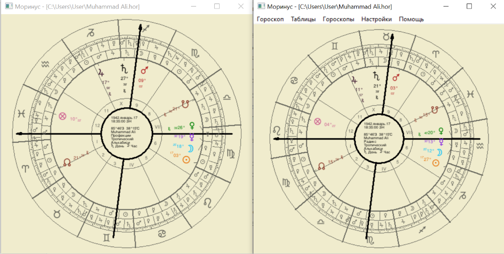
Сонце вже зайшло в Діву, але ще робить квадратуру до Натального
Сатурну. Воно ослабло і не таке сильне як Сонце в Леві.
Асцендент зайшов у восьмий дім. Він знаходиться в термах Марса.
Згідно з дирекціями Луна мала перехватити МС. Але я вважаю, що це
відбулось трохи піздніше і на момент бою промітором був Юпітер(МС в
з'єднанні з Юпітером)
Цей бій Мохаммед Алі програв.
Мохамеду в цьому бою зламали челюсть. Лілі:Асцендент в восьмому - його
тіло страждає, наявність ризиків.
Бій січень 1974 року
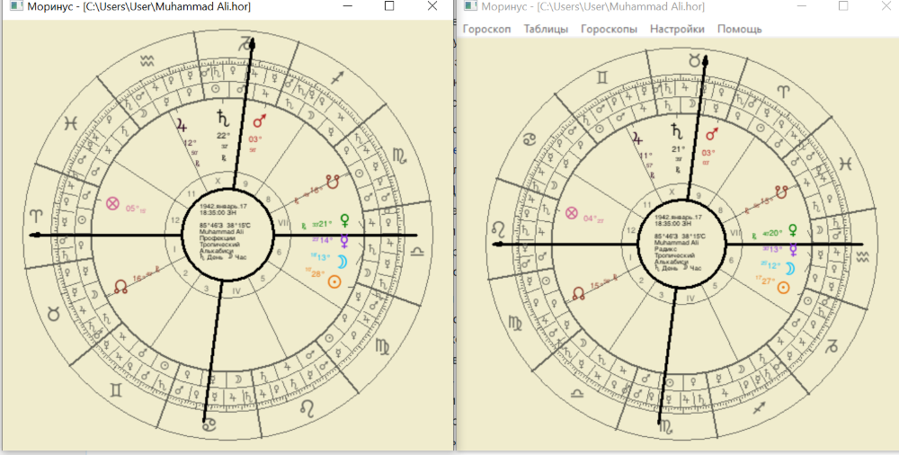
Профекційний Асцендент знаходиться в 9 домі. Його управитель Марс - в
профекційній карті знаходиться в Козерозі в екзальтації. Крім того,
Асцендендент знаходиться в секстилі з натальною Венерою, яка дуже
сильна в 7домі.
Це перший рік дії дирекції МС трин Місяць. Місяць знаходиться в
Терезах. Він не робить аспекту до МС. Але він дуже сильний в своєму
третьому домі. Крім того, він підтриманий секстилем з натальним
Юпітером.
Сатурн йде на з'єднання з Сонцем в Козерозі. Він не є таким шкідливим,
тому що знаходиться в своїй обітелі. Шостий дом знаходиться напроти
дому радості Сатурна. Це теж його послаблює.
Лілі:Ты должен также изучить, что если несчастливые, будучи
промитторами в какой либо дирекции, предвещают несчастье или какие-то
печальные события, зло будет более терпимым и принесет меньше
несчастья, если в радиксе они очень сильны или в своих домах ибо они
не вредят в своих домах или низвергают свою сигнификацию, и тогда
обычно делают меньше зла, когда в хорошем положении, чем в ином
случае.
Цей бій приніс Мохамеду Алі перемогу.
Бій 30.10.1974
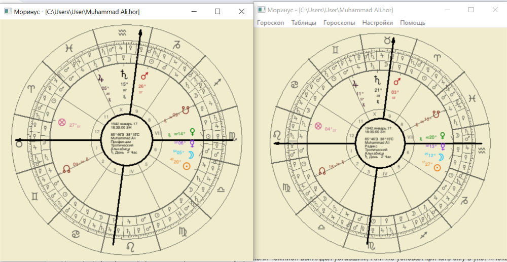
Профекційний Асцендент заходить в 10 натальний дім. Він знаходиться
близько до Сатурна. Згідно з Лілі, Профекційний Асцендент в 10 обіцяє
підвищення. Сатурн близький до Асценденту вказує на складнощі і
травми. Управитель Асценденту Венера слабка в профекційній карті (знак
Скорпіона), поражається Марсом, але стоїть на куті і це ії трохи
підсилює.
Профекційний Сатурн знаходиться в 6 домі в знаку Водолія. Згідно Лілі,
він не є дуже шкідливим в своїх домах. Крім того, він не робить
аспекта з натальним Сонцем. Профекційне Сонце в Терезах також не
робить аспекта з натальним Сатурном.
Крім того в найближчий час повториться дирекційний аспект МС в трині
до Меркурія. Профекційний МС в Водолії піде до з'єднання з натальним
Меркурієм (в свому трипліцитеті) в перший рік дирекції. І хоча це 6
слабкий дім, ця дирекція витягне ситуацію.
Цей бій Мухаммед виграв цей бій. Вікіпедія: після бою з Форманом Алі
був на вершині слави
Бій в Маніллі 1975
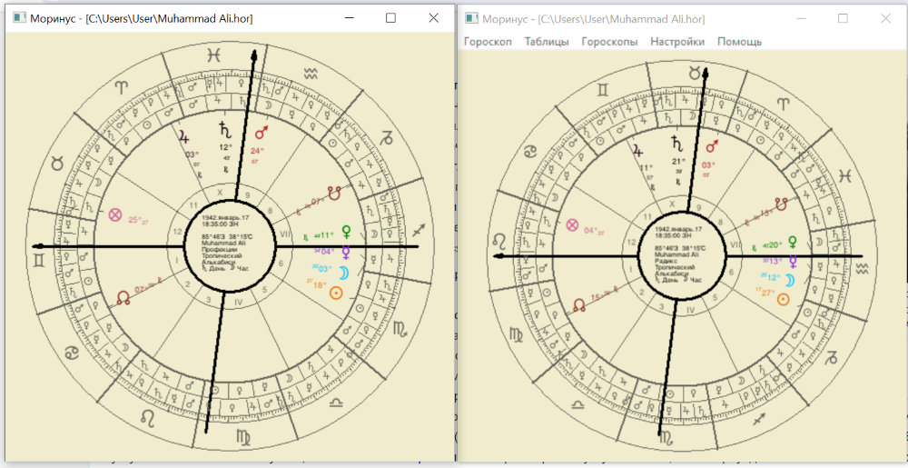
Асцендент знаходиться в 11 натальному домі в з'єднанні з натальним
Юпітером. Крім того він на королівській зірці Альдебаран. Згідно з
Лілі, Альдебаран дає підвищення.
Втім негативна дирекція Сонце квадрат Сатурн починає працювати - в
профекції повторюється негативний аспект і Сонце йде на опозицію з
Сатурном.
Профекційний МС знаходиться в натальному сьомому домі.
Мохаммед Алі переміг, але в цей же час він отримав великі травми і був
виснаженим. Після закінчення бою Алі втратив свідомість. Це був один з
найжорстокіших боїв в його житті.
Сама профекційна карта відображає бій двох рівних суперників. Сонце і
Сатурн в кутових домах, обоє мають середню есенцію.
Бій без правил з Інокі 6 червня 1976 року
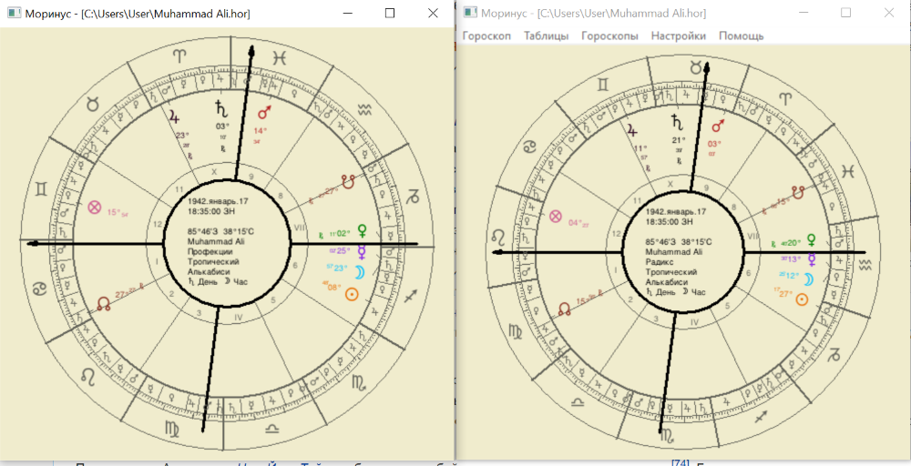
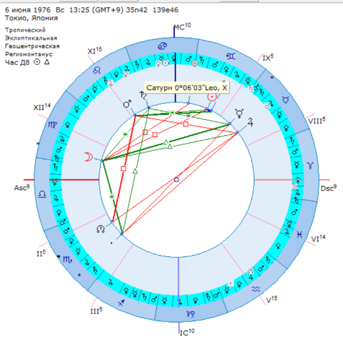
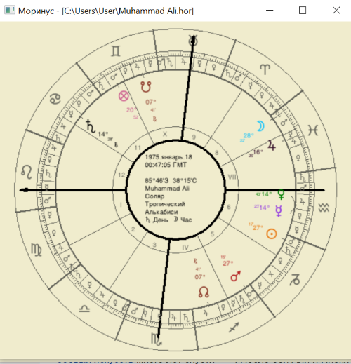
Профекційний Асцендент знаходиться на початку Рака в 11 натальному
домі. Його управитель Місяць знаходиться в п'ятому натальному в
Стрільці. Але профекційний МС попадає в кінець Риб в 8 натальний дім.
Це поганий дім для кар'єри. Аспектів між Меркурієм і МС немає. Крім
того, профекційний Меркурій знаходиться в Стрільці.
Профекційний Сатурн заходить в Овен, він знаходиться в 8 натальному
домі. Він не робить аспектів, але він дуже злий і набезпечний.
Транзитний Сатурн в Леві в розхідній опозиції до натального Сонця.
Під час бою Інокі ліг на підлогу і звідти став наносити удари по ногам
Мохамеда Алі. Таким чином він наніс більше 100 ударів. Бій закінчився
нічиєю. Але Алі мав великі проблеми з венами і загрозу ампутації. Його
ноги назавжди залишились хворими.
Бій 2 жовтня 1980
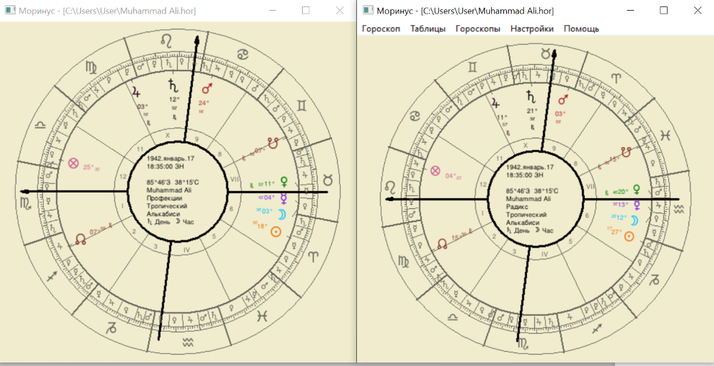
Після дворічної перерви Алі прийняв рішення повернутись у професійний
спорт.
В профекції ми бачимо розхідну опозицію, яка відбулась за пів року до
бою - Профекційний Сатурн в 12 домі в Раці зробив опозицію до
натального Сонця. Тепер Сатурн перейшов у Лев, і його негативна сила
залишається великою.
На мою думку, ця опозиція відбулась в той час, Коли Алі заявив про
повернення і розпочав серйозні тренування. Негативна подія
запустилась.
Профекційний Асцендент в Скорпіоні в 4 домі. Його управитель
Профекційний Марс в Раці в падінні, крім того в наталі він в вигнанні,
в Тільці.
Профекційний МС в Леві, в 12 натальному домі. По Лілі - втрата
репутації і слави.
Меркурій в Тільці йде до з'єднання з МС, але він не має такої
есенційної сили, як Сатурн.
Це був перший бій, в якому Алі програв достроково. Всі побачили, що
він втратив свої сили. Його противник домінував на протязі усього бою.
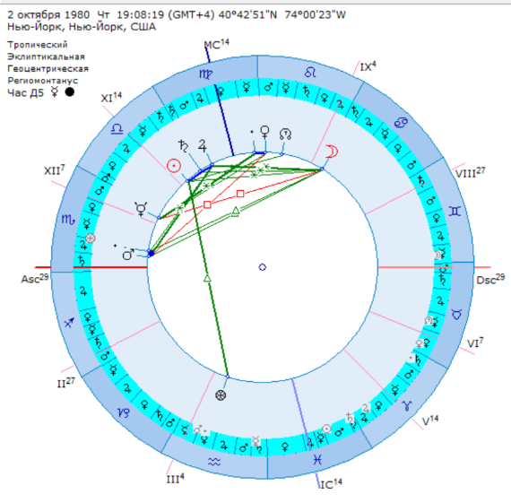
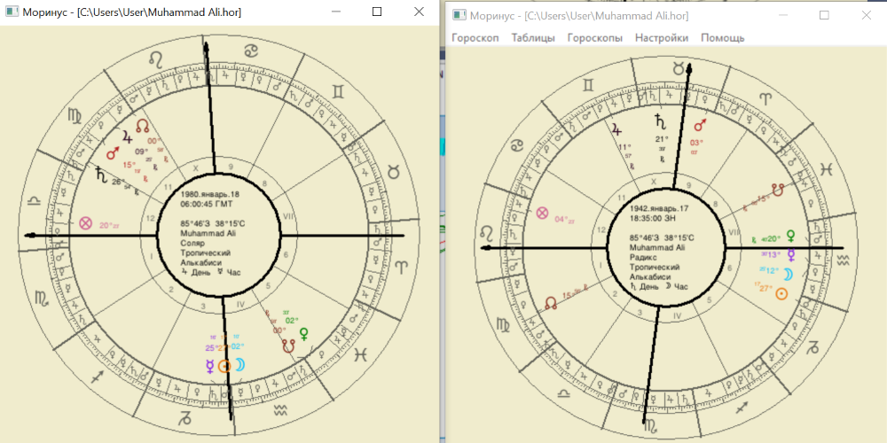
Останній бій грудень 1981 року
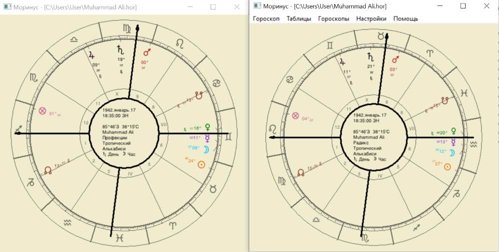
Профекційне Сонце в 24 градусах Тільця з'єднується з натальним
Сатурном. Крім того, Сонце знаходиться на зірці Алголь. І хоча
управитель профекційного МС Меркурій знаходитья в своїй обітелі і
з'єднується з натальним Юпітером і зіркою Альдебаран-ситуація не
виглядає доброю.Цей бій став останнім в кар'єрі Мохаммеда.
Висновки
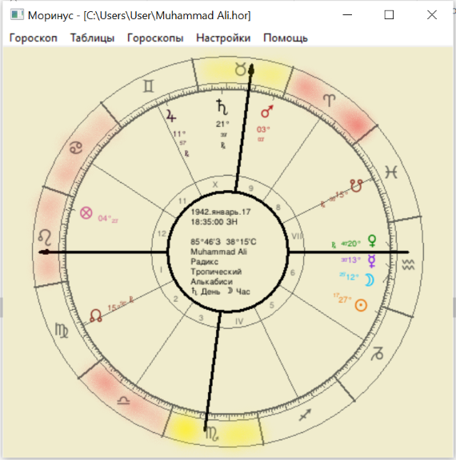
Червоні зони - зони, в яких профекційний Сатурн діяв особливо жорстко.
Всі вони співпадають з негативною есенцією, окрім Терезів - Терези
приходяться на перший рік дії дирекції. Крім того, Терези знак падіння
Сонця.
Жовті зони - теж негативні. В них стояло Профекційне Сонце, яке робило
Опозицію і з'єднання з натальним Сатурном.